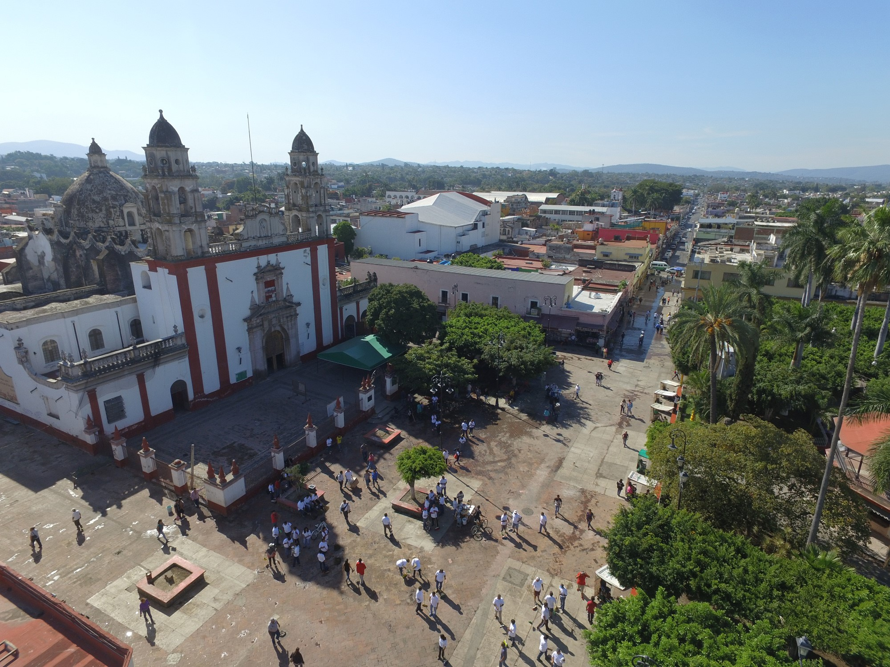
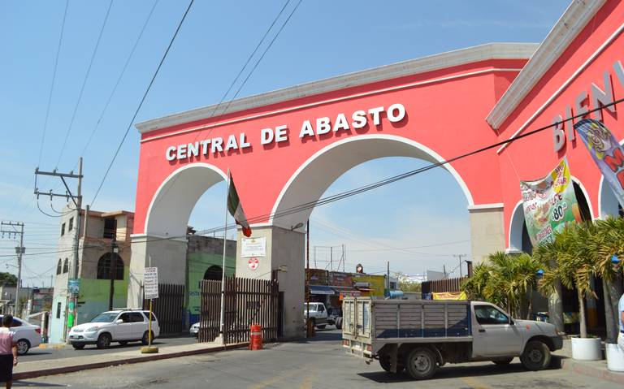

Conoce cuautla
Cuautla es una ciudad del estado mexicano de Morelos, conocida por su rica historia de guerra. El


Cuatlirri
Cuautla es una ciudad del estado mexicano de Morelos, conocida por su rica historia de guerra. El
Cuatlirri